A Five-Senses Journey for NEXVN's 5-Year Milestone
Following a series of collaborations in Hanoi alongside the Australian Embassy, Thiện Kiến was once again invited by New Energy Nexus Vietnam — this time to mark a different kind of milestone.
The celebration of a fifth anniversary became an opportunity to explore how ritual, scent, sound, taste, and hospitality could be woven into a single cultural experience.
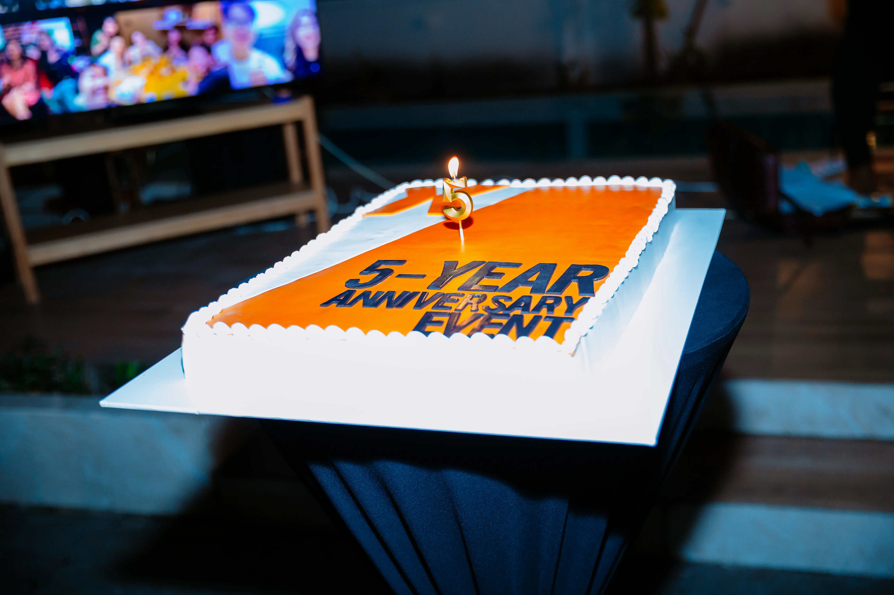
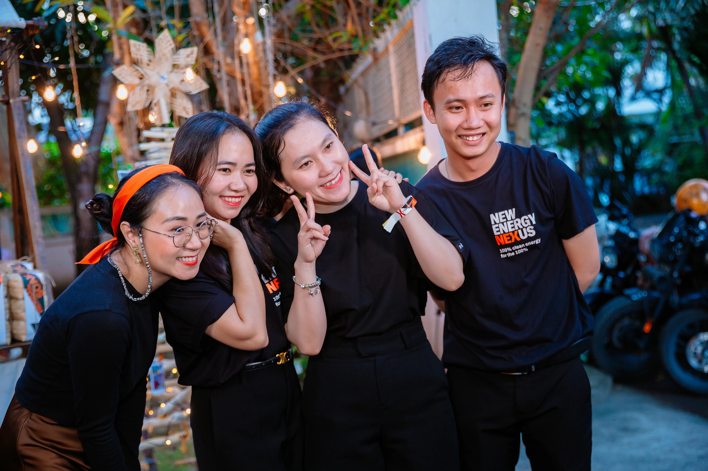
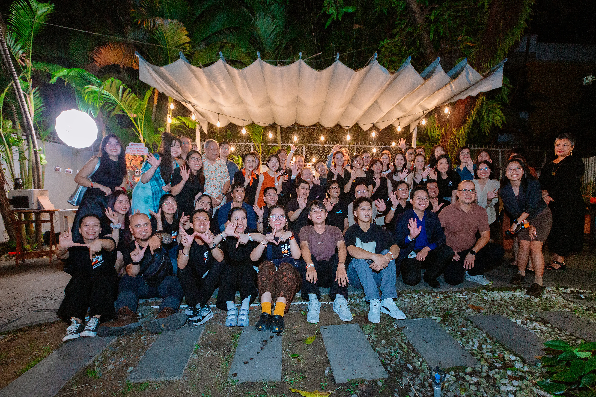
The event was scheduled close to Christmas, yet NEXVN did not want a conventional holiday setting.
Instead, they wanted Vietnamese cultural language to become the foundation of the experience — with Christmas only subtly suggested rather than directly portrayed or religiously framed. Orange, the signature color of NEXVN, needed to remain present throughout the evening, while star anise and cinnamon had to find their place within the spatial narrative.
This time, Thiện Kiến's role expanded far beyond table curation. From venue sourcing to the rhythm of movement through the space, the entire experience was designed as a continuous sensory journey.
For Thiện Kiến, the most meaningful briefs are often the ones that ask culture, hospitality, and storytelling to exist at the same table.
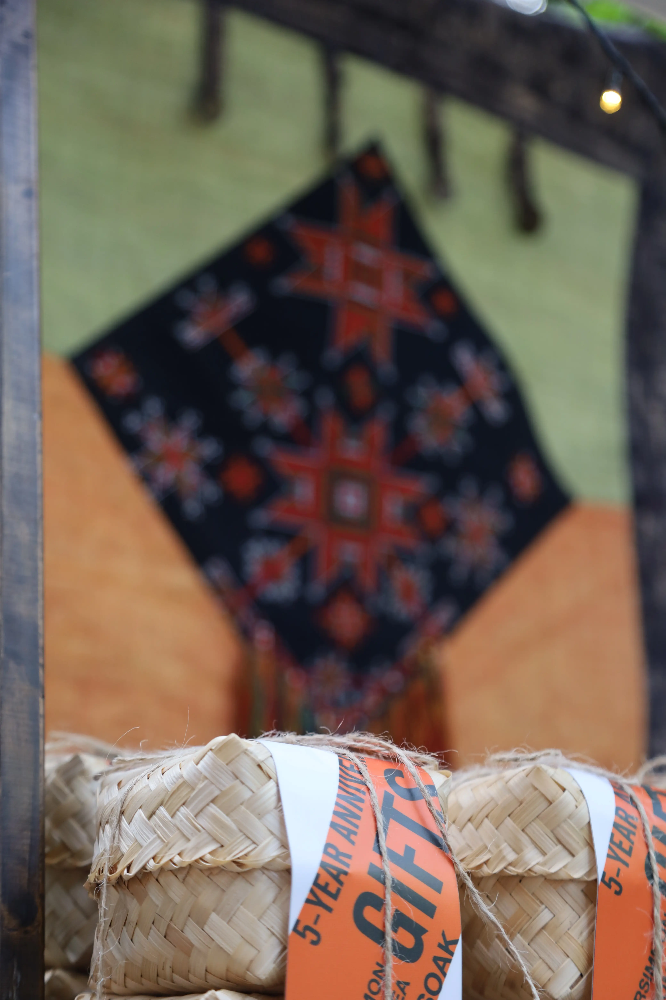
Thiện Kiến eventually found its answer in the Dao people's Lễ Cấp Sắc — the initiation ceremony that marks a passage into adulthood and a new stage of life.
For the Dao community, the ritual represents recognition, transformation, and maturity. To Thiện Kiến, NEXVN's fifth anniversary carried a similar emotional weight: not simply a celebration of time passed, but a milestone of growth.
The chosen venue was a secluded villa in Thảo Điền. From there, the five-senses journey quietly began.
A journey through five senses
A sculptural wooden tree bearing five years of photographs, rising upward in ascending layers
Cao Phong oranges and Bách Thảo star apples — NEXVN's color carried in the produce itself
A communal herbal blending table with five herbs in terracotta bowls, for guests to take home
Musicians moving naturally between requested songs and quieter instrumental moments
Woven Dao textiles, bamboo-rattan boxes, sticky rice cakes shaped and shared by hand
At the entrance stood a sculptural wooden tree assembled in ascending layers. Each layer carried photographs from NEXVN's five-year journey, rising upward like a quiet timeline of growth.
At its peak sat a star bearing the NEXVN logo — subtly echoing the star motifs often found in Dao textiles, symbols of harmony between humanity, nature, and the universe.
Beside it stood the gift station, framed with woven Dao textiles. Bamboo-and-rattan boxes were carefully sealed with paper wraps carrying NEXVN's colors and graphic language. At first glance, they seemed to exist as part of the installation itself.
What they contained would only be revealed at the end of the evening.
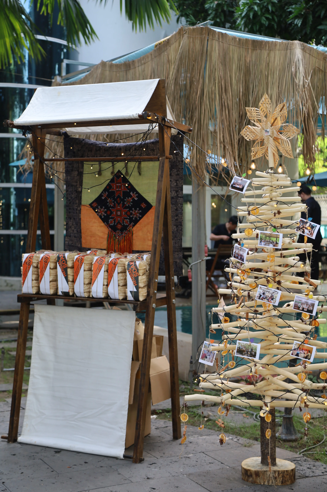
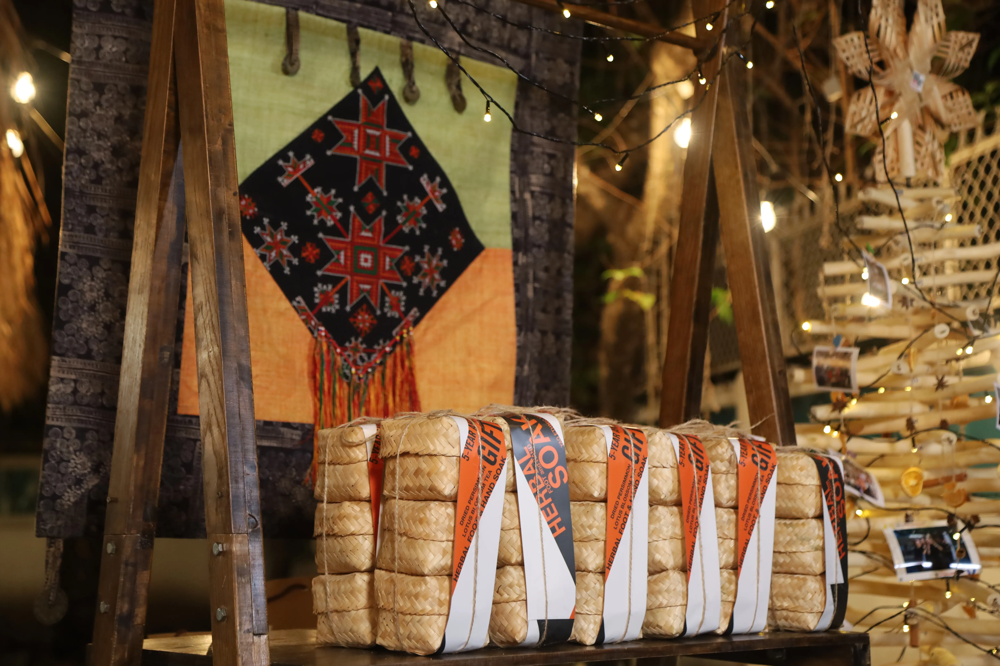
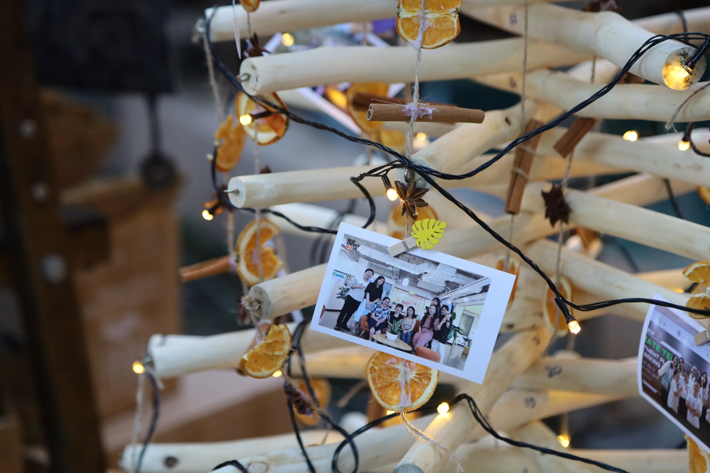
Beyond the entrance installation, taste became the next point of connection.
Guests were welcomed with fresh slow-pressed watermelon juice alongside seasonal Vietnamese fruits, including Cao Phong oranges from Hòa Bình and Bách Thảo star apples from Tiền Giang.
For Thiện Kiến, this was also where NEXVN's signature orange first emerged naturally within the experience — not through decoration, but through the colors of Vietnamese produce itself.
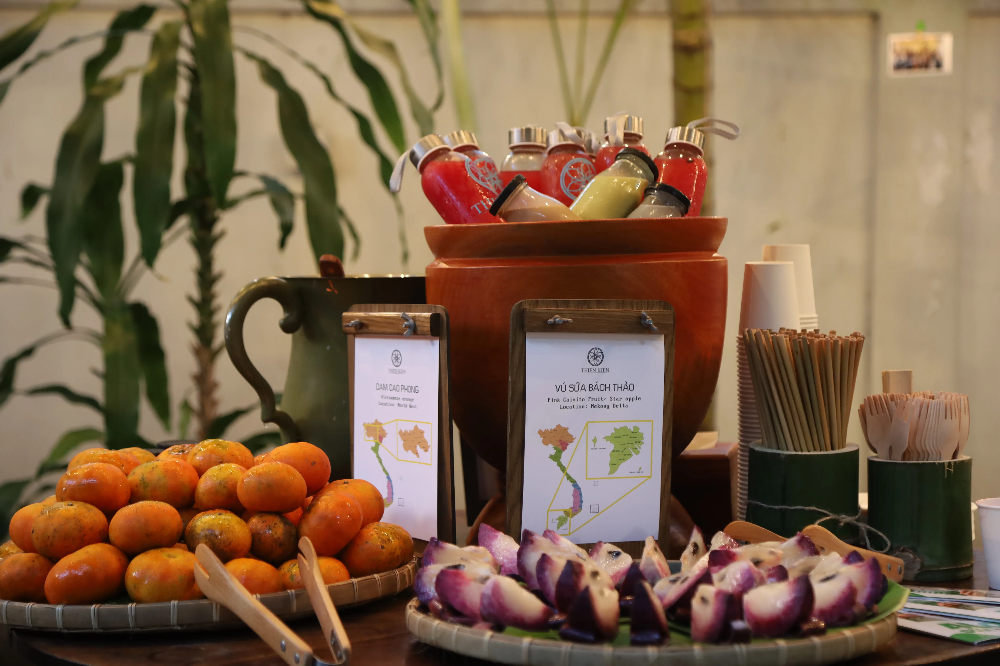
Further inside stood a large circular table centered around herbs, scent, and tactile interaction.
Herbal traditions have long existed within both Dao culture and Vietnamese daily life. Long before perfume became commonplace, scented herbal sachets were often carried on the body or placed within living spaces.
Thiện Kiến reinterpreted this practice through a communal blending table. Five different herbs were arranged inside reddish-brown terracotta bowls, their tones quietly echoing NEXVN's visual identity.
Guests selected small fabric pouches and blended their own combinations by hand, creating personal keepsakes to later hang in a workspace or car.
What they carried home was not simply a gift, but a scent shaped by their own memory and instinct.
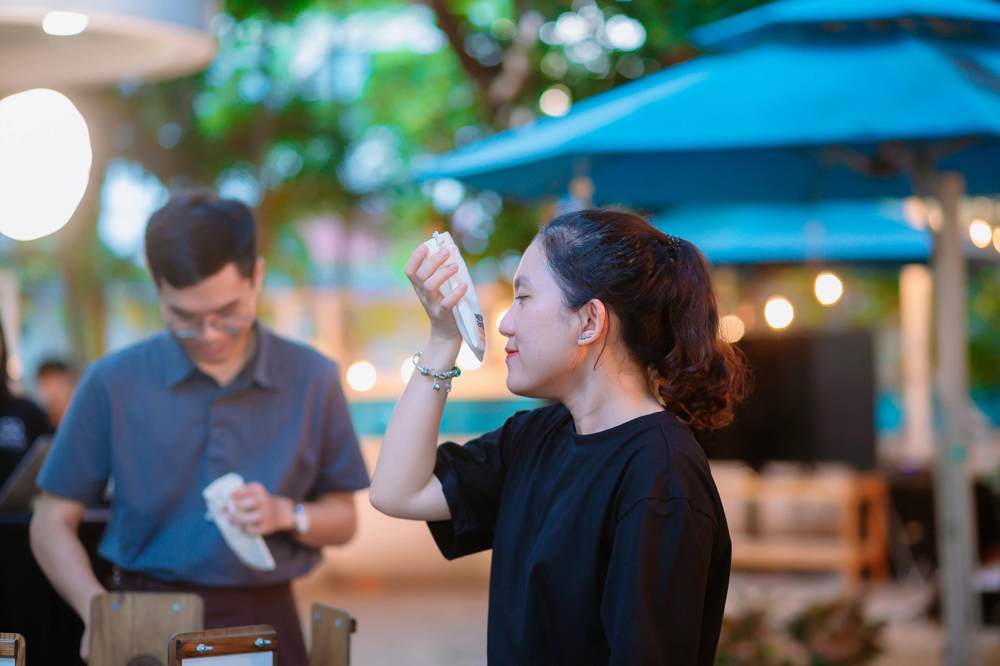
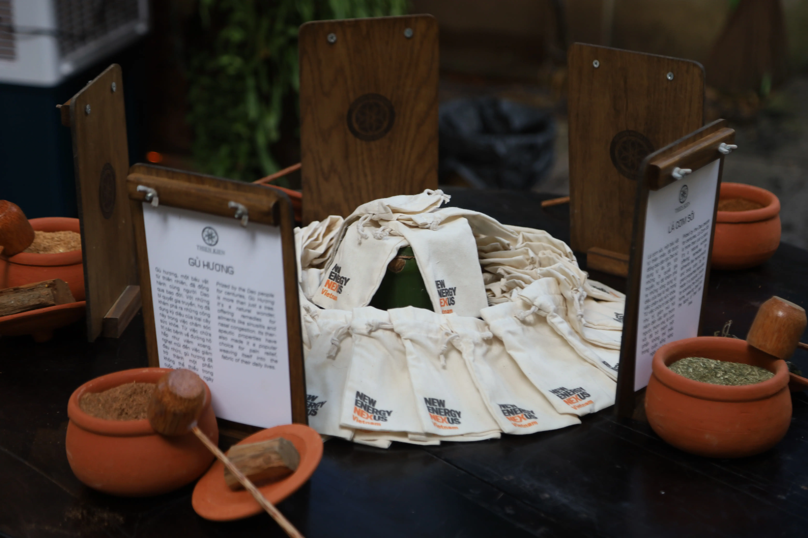
Nearby, musicians played throughout the evening, moving naturally between requested songs and quieter instrumental moments.
From the garden into the villa interior, strands of cinnamon and star anise hung along the pathways, allowing scent to quietly lead guests from one space to another.
The evening unfolded gradually — through sound, spice, movement, and atmosphere.
Inside the villa was the evening's central gathering: the communal dining table. Inspired by the traditional Dao leaf feast, dishes were served in bamboo tubes and shared across the table.
Grilled meats seasoned with mắc khén and hạt dổi carried the fragrant, smoky character of Vietnam's northern highlands. Dao-style sticky rice cakes, traditionally colored with gac fruit, let their vivid orange tones echo NEXVN's identity through food itself.
Thiện Kiến collaborated with Thơm Brewery, a Vietnamese craft beer label known for using local ingredients. Beers infused with mắc khén, hạt dổi, and Hà Giang buckwheat added another layer of warmth to the gathering — familiar in spirit, yet unexpected in flavor.
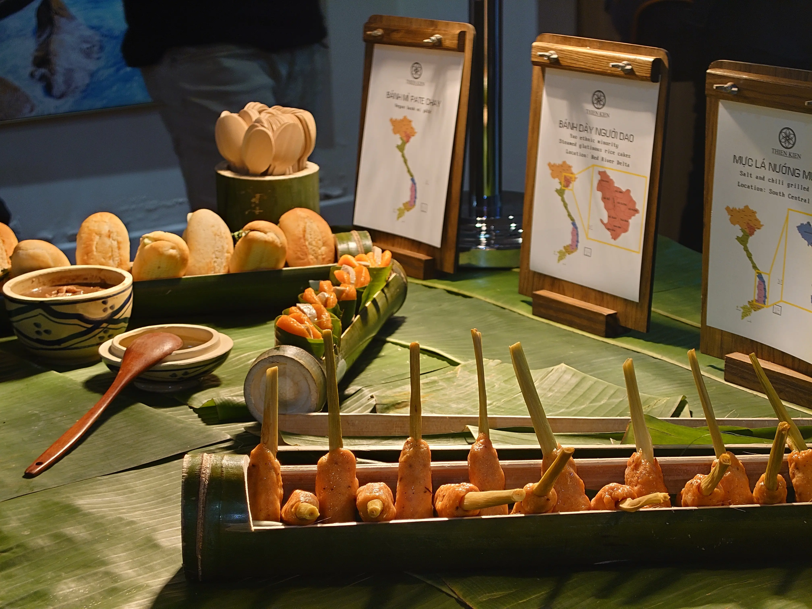
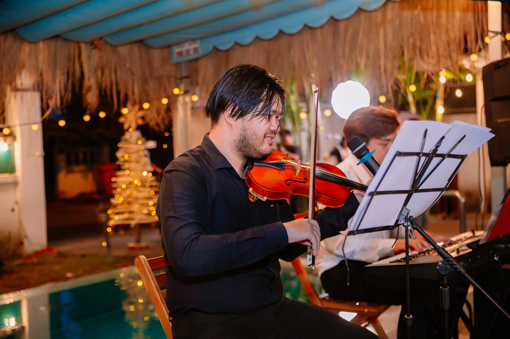
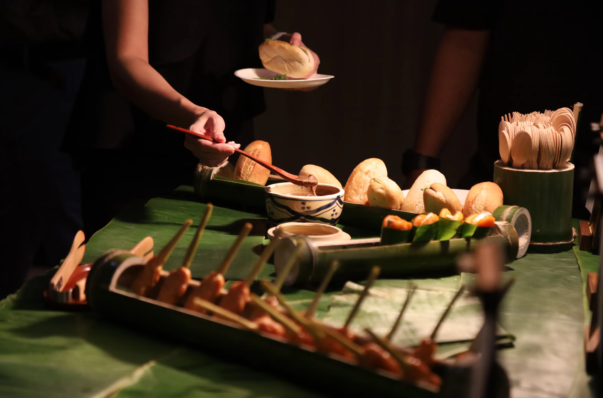
At the end of the evening, the sealed gift boxes near the entrance were finally revealed. Inside each bamboo-and-rattan box was a traditional Red Dao herbal infusion — a final gesture of hospitality from NEXVN to those who had gathered that night.
What first appeared as part of the installation quietly returned at the end of the journey, this time carrying something far more personal.
From the first step through the entrance to the final farewell, the evening unfolded gradually through movement, scent, sound, texture, and shared moments around the table. And beneath every detail was something Thiện Kiến values deeply in every gathering: